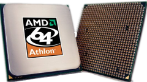
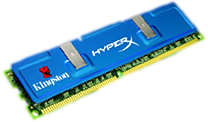

Overclocking is the process of making parts of a computer system
operate faster then originally intended, in an effort to gain
more performance out of the equipment. Overclocking has traditionally
revolved around making the processor, memory, and graphics processor of
a given computer system run faster than their stock speeds.

Usually, manufacturers of computer components rate their chips for
specific capabilities, based on the quality of the silicon chip,
but are otherwise the same thing as much higher rated, and priced units.
The majority of overclocking ventures centers around raising the 'clock
rate' of a given component. The clock rate of a processor, for instance,
could be rated at 2.4 Gigahertz, but through a sucessful overclock, could
run at 3.0 Gigahertz. Such is the power of overclocking, with proper
forethought for cooling -- and with enough time to tweak and test -- extra
and most importantnly, free preformance can be gained from your existing
hardware.

WARNING
While some components, namely processors, come from one or two sources
and are usually capable to be overclocked, a system running on cheap
power, and insufficenet cooling can easily stomp on the potential of
your overclock.
Overclocking can be very dangerous if certain parameters are taken too far!
Practicing caution always, and learning the basics before you start
increasing the strain on your system is paramount!
Introduction to Overclocking